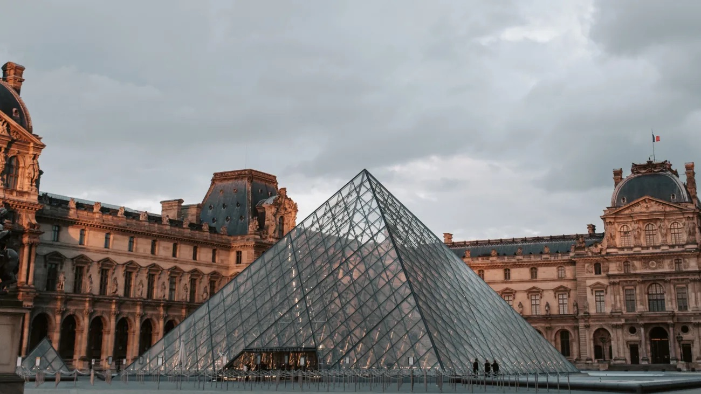
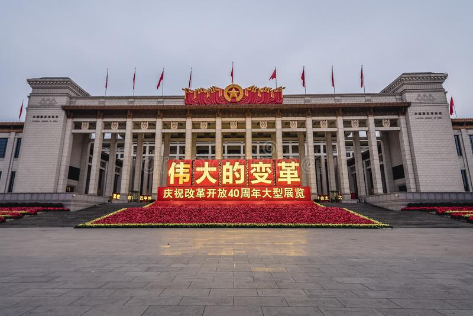
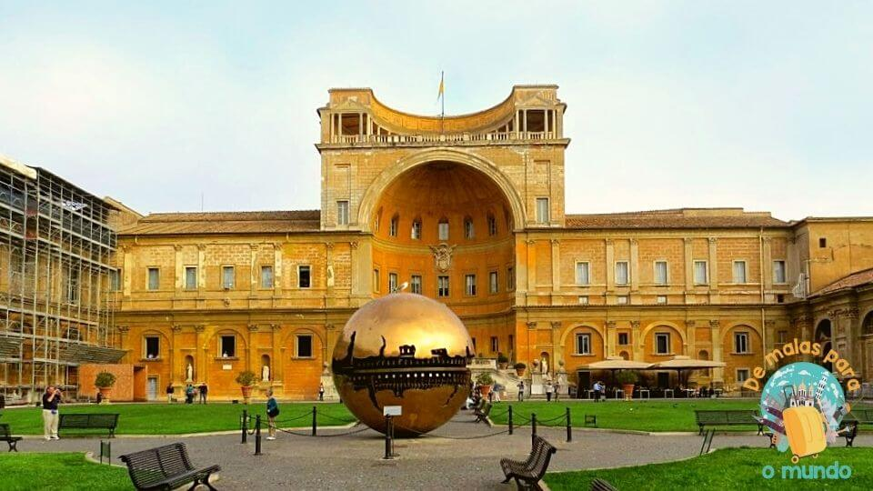
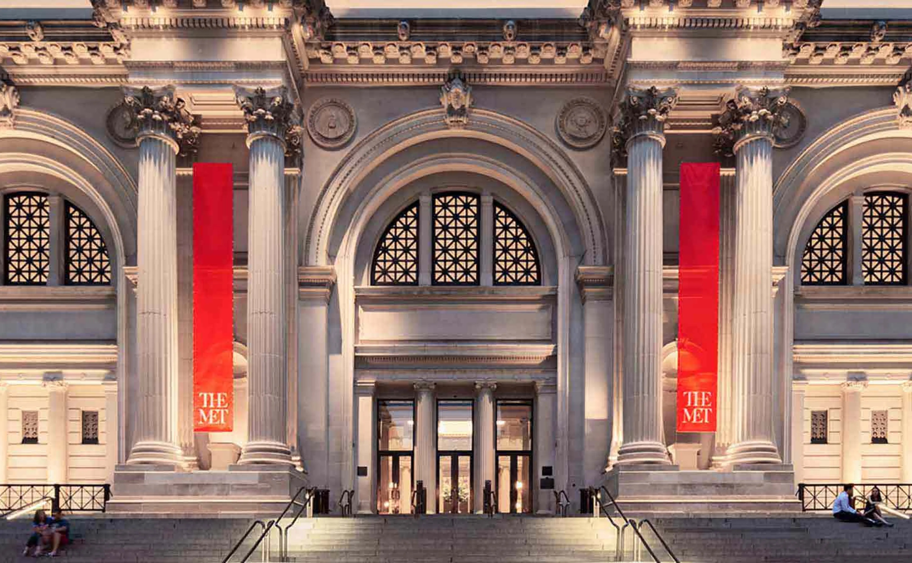

Os museus mais frequentados em todo o mundo são uma parte indispensável dos itinerários e aspirações de inúmeros viajantes em busca de experiências completas e memoráveis. O estudo Theme Index 2019, elaborado pela TEA (Themed Entertainment Association) em colaboração com a Aecon, revelou os 20 museus que tiveram o maior fluxo de visitantes no ano de 2019. Esse relatório anual destaca renomados estabelecimentos culturais de diferentes nações e com uma ampla diversidade de estilos museológicos, oferecendo aos visitantes uma variedade de opções para explorar e apreciar.
Entre os museus mais visitados do mundo estão:
|  |
LouvreLocalizado no Palácio do Louvre, o Museu do Louvre é reconhecido mundialmente como um ícone cultural. O palácio, uma fortaleza medieval originalmente construída no século XII, passou por inúmeras expansões e renovações ao longo dos anos. Antes de se tornar um museu, serviu como residência real para monarcas como Carlos V e Felipe II, que utilizavam o espaço para abrigar suas coleções artísticas particulares. |
|
|  |
Museu Nacional da ChinaEm 2019, o Museu Nacional da China conquistou o segundo lugar no ranking, recebendo a visita de impressionantes 7,39 milhões de pessoas. Para aqueles que estão em Pequim, uma visita a esse museu tradicional é imperdível. Com uma riqueza de detalhes, o Museu Nacional da China narra a história fascinante do país, abrangendo desde 1,7 milhão de anos atrás até a última dinastia. Além desse museu, há uma atração igualmente imperdível nas proximidades: a Grande Muralha da China, reconhecida como uma das Sete Maravilhas do Mundo Moderno e Patrimônio da Humanidade. A grandiosidade da muralha a torna a principal atração turística do país, merecendo uma visita obrigatória. |
|
|  |
Museus do VaticanoOs Museus Vaticanos são uma das principais atrações para os brasileiros que visitam a Itália, registrando um impressionante número de 6,88 milhões de visitantes em 2019. Situados dentro dos limites da Cidade do Vaticano, esses museus estão entre os mais espetaculares e fascinantes da Itália e do mundo. Abrangendo uma rica variedade de estilos artísticos e períodos históricos, eles oferecem aos visitantes a oportunidade de apreciar de perto tesouros artísticos de várias culturas, incluindo arte egípcia, grega, romana, etrusca e muito mais. |
|
|  |
Metropolitan Museum of ArtO Metropolitan Museum of Art, carinhosamente conhecido como MET, é uma das atrações mais populares em Nova York, atraindo impressionantes 6,77 milhões de visitantes em 2019. Essa conquista é especialmente notável para uma cidade tão concorrida como Nova York. Para os amantes da arte, a cidade oferece um destino verdadeiramente excepcional. Com uma ampla variedade de museus, cada um com seu enfoque cultural único, o MET se destaca como um dos espaços mais importantes dedicados à arte e à história em todo o mundo. |
|